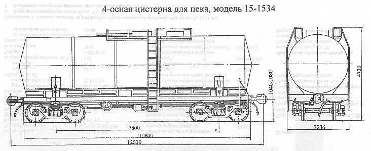

Назначение: для перевозки пека
Параметры
| Номер проекта | |
| Технические условия | ТУ 24.00.6222-90 |
| Модель вагона | 15-1534 |
| Тип вагона | |
| Изготовитель | Концерн "Азовмаш" |
| Грузоподъемность, т | 64,5 |
| Масса тары вагона, т | 28,9 |
| Нагрузка: статическая осевая, кН(тс) |
230,54(23,5) |
| погонная, кН/м(тс/м) | 76,06(7,76) |
| Объем котла, м3 | 63,4 |
| Скорость конструкционная, км/ч | 120 |
| Габарит | 1-Т |
| База вагона, мм | 7800 |
| Длина, мм: по осям сцепления автосцепок |
12020 |
| по концевым балкам рамы | 10800 |
| Высота от уровня верха головок рельсов максимальная, мм | 4730 |
| Количество осей, шт. | 4 |
| Модель 2-осной тележки | 18-100 |
| Наличие переходной площадки | нет |
| То же с ручным тормозом | нет |
| Наличие стояночного тормоза | есть |
| Диаметр котла внутренний,мм | 2800 |
| Длина котла наружная,мм | 10690 |
| Количество верхних люков, шт. | 2 |
| Наличие уклона котла к сливному прибору | есть |
| Наличие электрооборудования для разогрева продукта | есть |
| Наличие теплоизоляции | есть |
| Наличие кожуха изоляции | есть |
| Наличие предохранительного клапана | нет |
| Наличие предохранительно-впускного клапана | нет |
| Наличие предохранительной мембраны | есть |
| Наличие лестниц: наружных |
есть |
| внутренних | нет |
| Способ выгрузки | Верхний, нижний |
| Год постановки на серийное производство | 1990 |
| Возможность установки буфера | нет |
Примечание: при постановке котлов цистерн на платформы рамной конструкции: для исполнения 15-1534-03 масса вагона 31,1т, нагрузка от оси колесной пары на рельсы кН(тс), 230,54(23,5), нагрузка на один погонный метр пути, кН/м(тс/м), 75,95(7,75); грузоподъемность 62т.